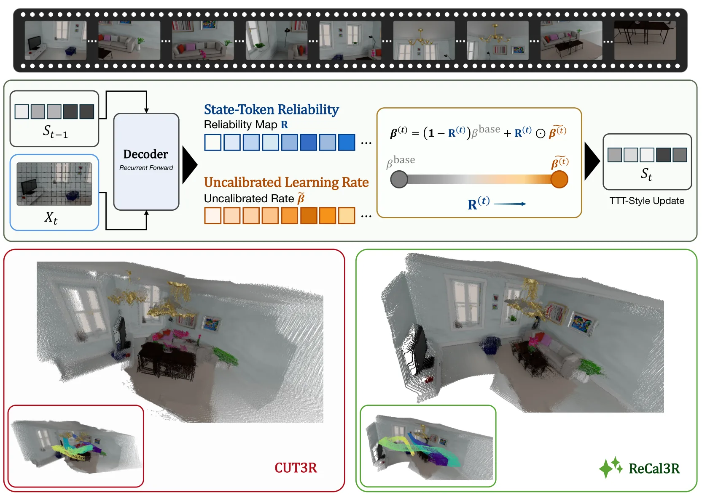
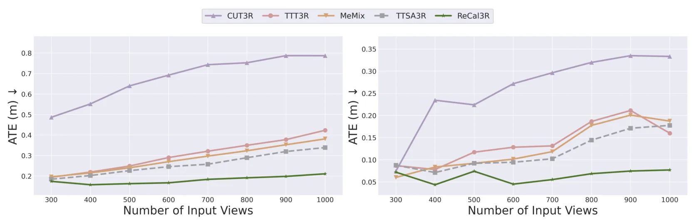
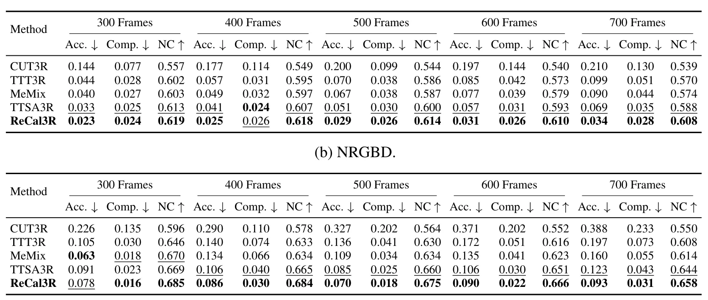

ReCal3R：面向流式三维重建的可靠性校准学习率ReCal3R: Reliability-Calibrated Learning Rates for Streaming 3D Reconstruction
对 streaming 3D reconstruction 和 SLAM-like 地图状态维护有启发；优点是 training-free 与低额外开销，局限是依赖 CUT3R 类 recurrent 表示。
一句话工作总结
根据场景状态可靠性动态调节更新步长，减少在线三维重建长期漂移和状态污染。
摘要
ReCal3R 针对流式 3D reconstruction 中 recurrent scene state 反复更新导致历史可靠信息被噪声覆盖的问题，估计状态 token 的可靠性，并结合 token 对齐、状态重建残差和近期更新压力来校准 token-wise learning rate。作为 CUT3R 的免训练校正规则，它在长序列 pose、depth 和 reconstruction 指标上取得明显提升，包括 3.7 倍 ATE 降低。
Streaming 3D reconstruction relies on a compact recurrent scene state to process long image streams in linear time and bounded memory. However, repeated updates can gradually corrupt this state, causing reliable historical information to be overwritten by noisy or ambiguous observations. We introduce ReCal3R, a reliability-calibrated learning rate method for recurrent 3D reconstruction. Instead of directly applying a candidate learning rate, our method estimates state token reliability from the maintained scene state and uses it to calibrate a candidate learning rate derived from token alignment, state reconstruction residual, and recent update pressure. The resulting token-wise learning rate interpolates between a conservative base rate and the candidate rate, suppressing aggressive updates on unreliable tokens while preserving adaptation to informative frames. Applied to CUT3R as a training-free calibration rule, ReCal3R reaches strong performance on long sequences in pose, depth, and reconstruction quality, including a 3.7$\times$ reduction in ATE, with comparable runtime and memory. Code is available at: https://github.com/Powertony102/ReCal3R.
中文解读摘录
- 链接：https://arxiv.org/abs/2607.05356 ｜ PDF：https://arxiv.org/pdf/2607.05356 ｜ 代码：https://github.com/Powertony102/ReCal3R
- 中文题名：ReCal3R：面向流式三维重建的可靠性校准学习率
- 关键信息：针对 recurrent/streaming 3D reconstruction 中历史 scene state 被噪声观测覆盖的问题，估计 state token 可靠性，并据此校准 token-wise learning rate。
- 为什么值得看：作为 CUT3R 的 training-free 校正规则，论文报告长序列 ATE 降低 3.7× 且运行/内存基本不变；对在线重建、长序列 SLAM-like 表示更新有启发。
- 需要核查：可靠性估计是否依赖特定 backbone、在回环/大视角跳变/弱纹理段的状态恢复能力，以及是否能与视觉里程计或 3DGS mapping 状态融合。
图表/页面预览
{kind=link}

{kind=link}

{kind=link}
